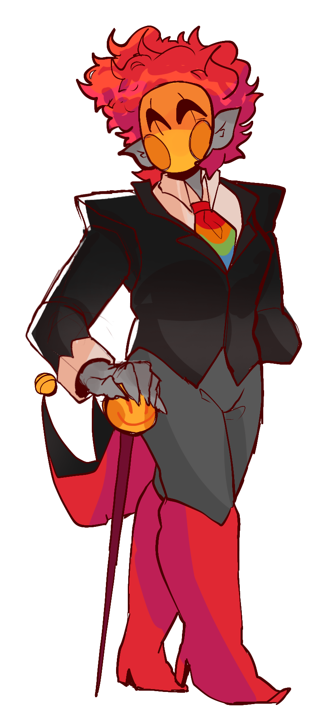

"Orchid, Orchid, Orchid! It's such a lovely name that the children call out all day and love to say. With his stretchy arms and twisty body, he's able to do almost anything you can imagine! He's always there when you need him, it's almost like he's just a step away"
With him being the mascot, Orchid is the one to talk to children and parents alike. He has first hand experience with any interactions that tend to happen for the faculty as well. All teachers talk to him when there is a problem. Then he will report it back to the boss himself, or A.S.E, the assistant principal of this building. Don't be put off by his smile, we know the teeth might be a bit odd. But trust us, it's simply there for the looks. In the past, we've even been told this helped kids be less scared of animals, such as dogs and cats, with fangs. He's doing a favor for us all!

The Boss
- - - - - - - - - - - - - - - - - - - - - - - - - - - - - - -
“ It simply came to me one day, sitting there in my room as I looked over the school system around here. Honestly, when you really ponder about it, you come to question the way things play out, don’t you? Even the kids themselves think about it. Moving from school to school, losing friends, losing connections. Losing their teachers. With my school, that concept fades. Friendships become one of the top priorities of school years.” - [ REDACTED], July 16th, 1994.
The Boss, known as [REDACTED] as we stated, is the owner of the school, the brains behind it all. He stands at around 6ft tall, holding a smiley faced caine around the school. Did you know? Smiles are his favorite type of symbol! Within the school, you’ll see so much imagery of happy faces. Drawings, Posters, Photographs and so much more! A lovely way to spread joy within the school. As for his mask, many ask why he wears one? In his younger years he got into an injury– oh dear!-- and he would rather not have your children see such a thing. So, the mask helps him feel more comfortable and friendly.